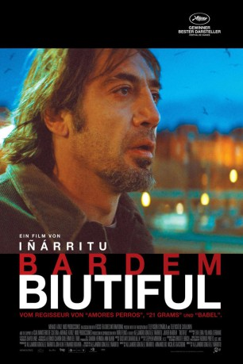

#1327 Biutiful
Auszeichnungen: für 2 Oscars nominiert
 
 IMDB-Wertung: 7.5 / 10
IMDB-Wertung: 7.5 / 10  Metascore: 58
Metascore: 58 
Biutiful erzählt die Geschichte von Uxbal. Hingebungsvoller Vater, verzweifelter Liebhaber und Kleinganove im Untergrund. Ein Wanderer zwischen den Welten am Rand von Barcelona, auf der Suche nach Versöhnung mit seiner Frau, seinen Kindern und doch letztendlich mit sich selbst.
Jahr: 2010
Dauer: 148 Minuten
FSK: 16
Land: Mexiko Studio: Prokino FilmverleihTonspuren:
Untertitel: Deutsch,
Auflösung: 1080p (1920x1040) Größe: 11673 MB
Genre: Drama, Liebe
Regisseur: Alejandro G. Iñárritu
Drehbuch: Alejandro G. Iñárritu, Alejandro G. Iñárritu, Nicolás Giacobone, Armando Bo
Soundtrack: Gustavo Santaolalla
Darsteller:
 Javier Bardem als Uxbal
Javier Bardem als Uxbal- Maricel Álvarez als Marambra
 Eduard Fernández als Tito
Eduard Fernández als Tito- Rubén Ochandiano als Zanc
 Karra Elejalde als Mendoza
Karra Elejalde als Mendoza- Hanaa Bouchaib als Ana
- Guillermo Estrella als Mateo
- Cheikh Ndiaye als Ekweme
- Diaryatou Daff als Ige
- Taishen Cheng als Hai
- Jin Luo als Liwei
- George Chibuikwem Chukwuma als Samuel
- Lang Sofia Lin als Li
- Yodian Yang als Chino Obeso
- Tuo Lin als Barman Bar Hai
- Xueheng Chen als Chino Bodega
- Xiaoyan Zhang als Jung
- Ailie Ye als Padre Hai
- Xianlin Bao als Madre Hai
 Ana Wagener als Bea
Ana Wagener als Bea- Nasser Saleh als Muchacho
 Tomás del Estal als Hombre de Luto
Tomás del Estal als Hombre de Luto- Ángel Luis Arjona als Niño Muerto
- Dolores Echepares als Señora Funeral
- Adelfa Calvo als Mujer Grande
 Manolo Solo als Médico
Manolo Solo als Médico- Violeta Pérez als Enfermera
- Germán Almendros als Cirujano 1
- Isaac Alcayde als Cirujano 2
- Nacho Moliné als Cirujano 3
- Carmen La Lata als Vieja
- Annabel Totusaus als Secretaria Fincas
- Eduardo Gómez als Hombre Semidesnudo
- Ramón Elies als Empleado Cementerio 1
- Juan Vicente Sánchez als Empleado Cementerio 2
- Félix Cubero als Burócrata
- Carmen Peleteiro als Mesera
- Federico Muñoz als Alcalde
- Leticia Albizuri als Chica Joven 2
- Maria Casado als Presentadora Informativos
- Judith Huertas als Reportera Informativos
- Aroa Ortiz als Bailarinas Stripper Bar
- Victoria M. Díaz als Bailarinas Stripper Bar
- Sonia Cruz als Bailarinas Stripper Bar
- Sophie Evans als Bailarinas Stripper Bar
- Luna Jimémez Colindres als Bailarinas Stripper Bar
- Dunia Montenegro als Bailarinas Stripper Bar
- Rodica Ioana Ungureanu als Bailarinas Stripper Bar
- Albert Grabuleda Capdevila als Mosso d'Esquadra Antidisturbio , uncredited
 Alain Hernández als (uncredited
Alain Hernández als (uncredited
Datei: X:\2010(A-F)\Biutiful (2010, FSK16, 1920x1040).mkv seit 22.06.2015
Festplatte: HD 2009(G-Z)-2010(A-F)
 Es gibt insgesamt 95 Filme in der Gruppe '2010(A-F)'
Es gibt insgesamt 95 Filme in der Gruppe '2010(A-F)'